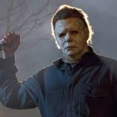
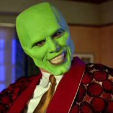
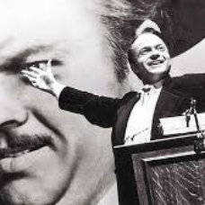
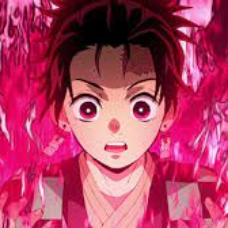

CINEMATOPIA
Cinematopia es tu centro personalizado de información curada por criticos, productores y avídos fans del arte del cine.

DIRECTORES

Confesiones del estudio: Guillermo del Toro


NOTICIAS


PELICULAS

TOP 25 PELICULAS DE TERROR DE TODOS LOS TIEMPOS
Las mejores películas de terror. Esta lista fue creada , curada y supervisada por los críticos y cinéfilos más exitosos del medio.
hace 9 hrs.

TOP 25 PELICULAS DE COMEDIA DE TODOS LOS TIEMPOS
Las mejores películas de comedia de todos los tiempos. Lista creada y curada por un gran número de fans ávidos del genero.
hace 12 hrs.

TOP 25 PELICULAS DE DRAMA DE TODOS LOS TIEMPOS
Un genero de películas trascendental. Lista creada y curada por diferentes actores nacionales cuya especialidad radica en el genero.
hace 18 hrs.

TOP 25 PELICULAS DE ANIMACION DE TODOS LOS TIEMPOS
Arte más cine, ¿se puede pedir más? Lista de películas animadas en 2D y 3D curada por animadores alrededor del mundo.
hace 19 hrs.